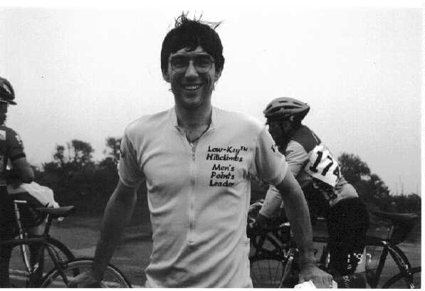

Senior Pro 1/2
1. Glen Winkel USPS 17:11
2. John James unattached 24:08
Senior 5
1. Tracy Colwell Alto Velo 16:46 (fastest man)
2. Willis W. Su unattached 19:02
3. Eric Rescorla unattached 22:50
4. Barry Johnson unattached 24:08
5. Scott Paz DFL 25:28
Senior 4
1. Dan Connelly TNT 18:37
2. David Bruetle Chico State Cycling 19:43
3. Kevin Pontuti Vulcan Velo 20:09
4. Wayne Smith Alto Velo DNF
Senior 3
1. Casper Rubalcava NorthCoast 16:49
2. Tim Clark High Sierra 19:22
3. Andrew Suaffer SanJose Cycling Club 19:42
4. Randy Denton Team Peddler 21:59
Master 35
1. Ken Eichstaedt DFL 18:42
2. Jay Kinney unattached 21:33
Master 45
1. Gerry Burney NorthCoast Express 19:45
2. David Longhetti ICCC/Int 19:45
3. Frank Yancey NorthCoast Express 21:16
4. Brett Hawkes Peninsula Velo 21:21
5. Dave Crew NorthCoast Express 22:03
6. Ron Lebard unattached 22:23
7. Jim Lombard Peninsula Velo 22:58
Juniors
1. James Hibbard Peninsula Velo 19:41
2. Kevin McDonald NorthCoast Express 20:21
Women
1. Elizabeth Benishin Alto Velo 22:30 (fastest woman)
2. Julie Cowell Alto Velo 25:00
3. Phyllis Olrich Alto Velo 25:21
4. Patt Baenen Alto Velo 25:45
5. Caryne Mount Peninsula Velo 32:07
Overall
place name team cat time
1 Tracy Colwell Alto Velo Senior 5 16:46
2 Casper Rubalcava NorthCoast Senior 3 16:49
3 Glen Winkel USPS Pro 1/2 17:11
4 Dan Connelly TNT Senior 4 18:37
5 Ken Eichstaedt DFL Master 35 18:42
6 Willis W. Su unattached Senior 5 19:02
7 Tim Clark High Sierra Senior 3 19:22
8 James Hibbard Peninsula Velo Juniors 19:41
9 Andrew Suaffer SanJose Cycling Club Senior 3 19:42
10 David Bruetle Chico State Cycling Senior 4 19:43
11 David Longhetti ICCC/Int Master 45 19:45
12 Gerry Burney NorthCoast Express Master 45 19:45
13 Kevin Pontuti Vulcan Velo Senior 4 20:09
14 Kevin McDonald NorthCoast Express Juniors 20:21
15 Frank Yancey NorthCoast Express Master 45 21:16
16 Brett Hawkes Peninsula Velo Master 45 21:21
17 Jay Kinney unattached Master 35 21:33
18 Randy Denton Team Peddler Senior 3 21:59
19 Dave Crew NorthCoast Express Master 45 22:03
20 Ron Lebard unattached Master 45 22:23
21 Elizabeth Benishin Alto Velo Women 22:30
22 Eric Rescorla unattached Senior 5 22:50
23 Jim Lombard Peninsula Velo Master 45 22:58
24 Barry Johnson unattached Senior 5 24:08
25 John James unattached Pro 1/2 24:08
26 Julie Cowell Alto Velo Women 25:00
27 Phyllis Olrich Alto Velo Women 25:21
28 Scott Paz DFL Senior 5 25:28
29 Patt Baenen Alto Velo Women 25:45
30 Caryne Mount Peninsula Velo Women 32:07
-- Wayne Smith Alto Velo Senior 4 DNF
|
 Tracy Colwell, overall 1997 San Bruno Hillclimb winner and 1996 Low-Key Hillclimb series men's champion (photo Linelle Betts, Pen Velo) |
I have never been in the "lead" vehicle before, it was really exciting. So, here is a view out the back window as narrated by four racers who decided we felt more like Phil Ligget than Pantoni.
Wednesday morning was wet and windy. Registration was under a canopy with a great deal of concern about mud and rock slides. The flags above the parking lot area were sticking straight out from the wind. We sent our club president as scout to make sure the road was safe and clear. He reported the race would start with a 50 meter tail wind, then a major head wind for the next three and a half miles. The road was clear but there were small rocks and plenty of water.
Almost everyone who registered showed up. There were 5 women and a large group of 45+, more than we expected overall.
This was a mass start as usual and for the 30 seconds when the riders assembled it looked like the rain may abate. It was only a tease, as the officials started the race the heavens opened again with a new gale of water and gusts of wind.
As the race started three distinct groups formed in the first 500 meters. There was a group of around 7 in front that quickly reduced to 5. By the time the group reached the ranger station (around half way) the lead group was down to 3.
The speeds varied from 15 mph on the steep portions to more like 18 on the less steep climbs. We were using the car speedometer so this is a vague estimate.
Tracy Colwell (Cat 5) lead almost the entire race. When the race started he stayed with the lead group and let them set the pace. Pretty quickly he took the lead and never relinquished it all the way to the top.
The three at the ranger station were Tracy Colwell, followed by Glen Winkel, last Casper Rubalcava. Casper has a very rocking style of climbing. It appeared to us he was struggling just to stay on for most of the race. In retrospect that may just be his riding style. Glen was breathing hard but did not appear to be hurting.
Three or four times Tracy made half-hearted attempts to move over and let Glen lead. Glen stuck to him like glue. The head winds were a major factor. As noted by Liz, the women's leader "I am really glad I did not use my Zipp's".
Around 1/2 mile to go Tracy started weaving back and forth. Those of us that do not climb well use this technique of "paper boying" up a hill to reduce the steepness. We were guessing he was trying to force Glen off his wheel since there were lots of little rocks and gusts there. I asked Tracey later and he said he was trying to put Glen in the wind to minimize the final sprint.
Around 1/4 mile or less to the finish is a sharp hill before the rolling finish. On the hill Tracy put the hammer down effectively losing Glen. Casper seemed to have some sprint left in him, but not enough. There was a clear 2-3 bike length lead when Tracy crossed it. The three seconds difference in their finish times does not show the dramatic difference between the two finishes.
There were many very heroic efforts. Alto Velo swept the women's division with the top four finishers as well as the fastest man. Caryne Mount, who had a baby a few months ago completed the race. Three folks RODE their bikes to the race, an official, a spectator and a racer. One of the DFL riders went up the hill on a fixed gear mountain bike. What is a little rain to REAL racers? To my dismay, everyone was clothed and nobody wore dresses or PJ's. Guess I have to do more 'cross for that kind of entertainment.
Where was BBC this year? We missed Narda and some of the regulars.
Most of our photos are awful, the rain and fog limited vision and the lens got pretty wet. We will see if we can salvage any of them.
After the race Tracy and Liz were awarded the Hill Climb Series Yellow Jerseys by Kevin Winterfield. Classy!!
Many thanks to Kevin Keil and Rick Sutton who did registration, Geo Kitta gave up racing to organize course marshalls, Gene Condon for the awning, Gavin for medical (thankfully we did not need him), George Mount and Skaates for taking times at the top of the hill, Rudy for the porta-potty, Bianchi for all the good prizes, and hosts of others who helped.
What fun. My rain boots and coat are finally dry. On to early birds....
{kind=link}